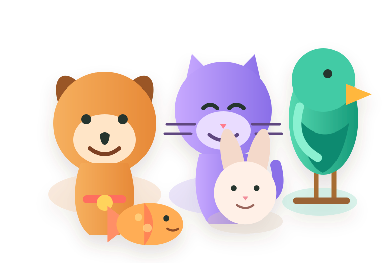

Set the direction
Choose the animal, gender preference, style and personality that best describe the pet.
Generate clear, memorable names for dogs, cats, birds, horses, rabbits, fish, hamsters and turtles. Filter by style, gender and personality, then save a shortlist.

Choose a pet, style and personality. Each round avoids recently shown names in this browser session.
Start with the animal type for a more relevant pool, then refine the results with style and personality filters.
Friendly, strong and funny dog names for puppies, rescues and adult dogs.
Open generatorCute, distinctive and calm cat names for kittens and adult cats.
Open generatorBright, easy-to-repeat names for colorful and talkative parrots.
Open generatorCheerful names for parakeets, cockatiels, finches and lovebirds.
Open generatorElegant, western and powerful names for mares, stallions and foals.
Open generatorSoft, playful bunny names inspired by color, size and personality.
Open generatorCreative names for bettas, goldfish and aquarium companions.
Open generatorTiny, snack-inspired and funny hamster name ideas.
Open generatorCalm, nature-inspired and playful turtle or tortoise names.
Open generatorThe tool gives variety, but the final choice should still pass a practical everyday test.
Choose the animal, gender preference, style and personality that best describe the pet.
Recently shown names are excluded for the same filter combination, which keeps each round fresh.
Say each finalist out loud, compare it with commands and use it naturally for a day.
Read complete, internally linked articles with practical tests, themed lists and next-step navigation.
Popular dog name ideas for families looking for a clear, friendly name that works at home, on walks and during training.
Read the guideCheerful bird names for parakeets, cockatiels, lovebirds and other social companion birds.
Read the guideBlack cat names inspired by night skies, elegant colors, playful personalities and soft everyday sounds.
Read the guideWarm brown dog names inspired by coffee, chocolate, woodlands, spices and autumn colors.
Read the guideCute puppy names that are short, easy to repeat and practical for recall training.
Read the guideGirl cat names ranging from gentle and elegant to bold, modern and playful.
Read the guideThe generator combines larger pet, style, personality and gender pools. It stores recently shown names in session storage, then excludes them from the next rounds for the same filter combination.
Yes. You can use, copy and shortlist generated names for personal pet naming. No account or payment is required.
One or two syllables are often convenient because they are quick to repeat. Clarity matters more than length, so test the name beside common cues such as sit, stay and no.
Yes. Introduce the new name with positive reinforcement, use it consistently and phase out the old name gradually if the pet already responds to it.
Say each name at normal volume, call it from another room, write it on an ID tag and use it in a sentence. Keep the option that feels clear and natural in every test.
The static generator does not require an account. Favorites use local storage and recent-name history uses session storage in your own browser.